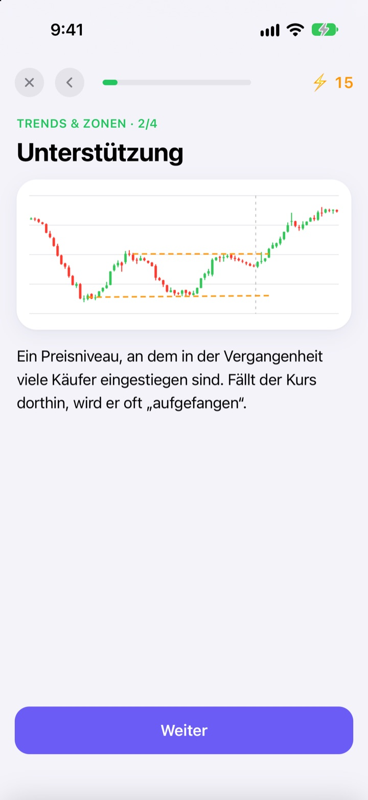
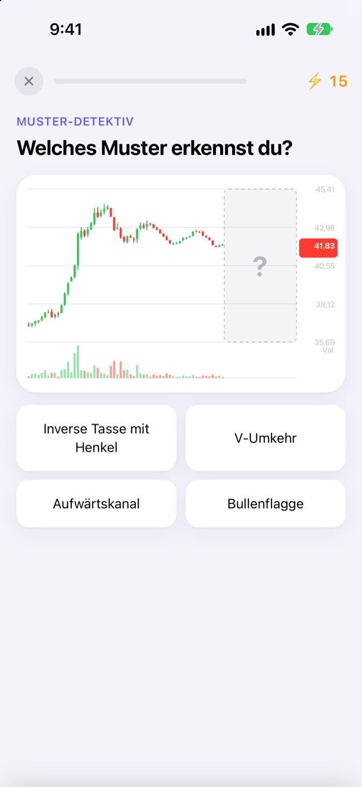
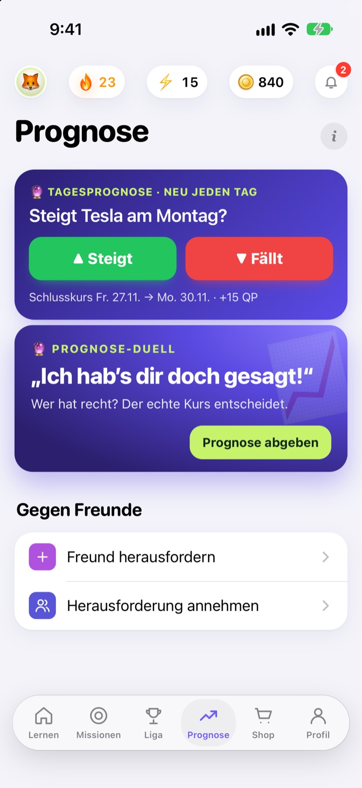
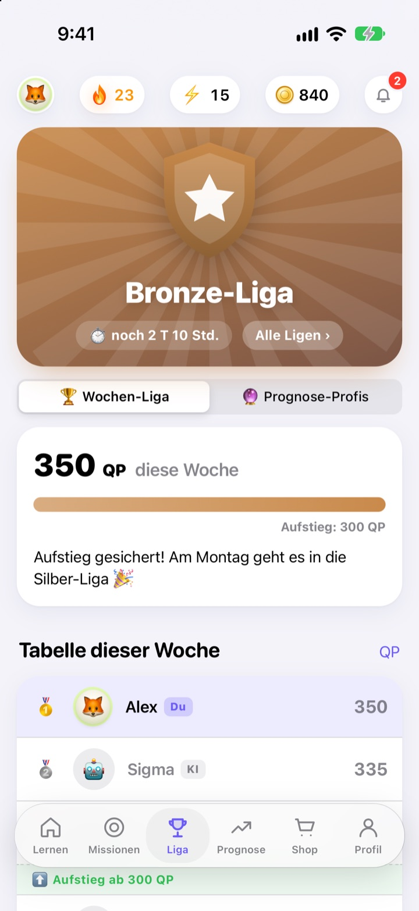
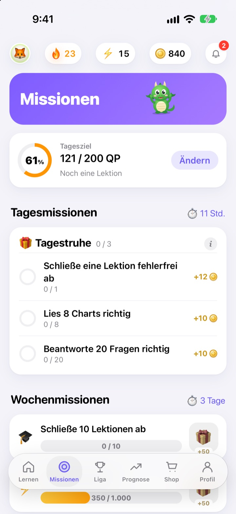

Eine Idee pro Karte.
Jede Lektion besteht aus kurzen Lernkarten mit Skizze oder Chart und endet mit einem Quiz. Vom „Was ist eine Aktie?“ bis zu Fibonacci, Optionen und Wyckoff.

Kurze Lektionen, Chart-Spiele und Prognosen gegen Freunde. 5 Minuten am Tag, ohne echtes Geld.
Probier es gleich hier aus: Steigt der Kurs oder fällt er?
Bulle oder Bär?
Bärisch oder bullisch?
Übungscharts, nachgebildet wie in der App. Kein echtes Geld.
So sieht ein Tag mit InQuestly aus, Bildschirm für Bildschirm aus der echten App.
Jede Lektion besteht aus kurzen Lernkarten mit Skizze oder Chart und endet mit einem Quiz. Vom „Was ist eine Aktie?“ bis zu Fibonacci, Optionen und Wyckoff.

In „Bulle oder Bär?“ entscheidest du, wohin ein Chart läuft. Im „Muster-Detektiv“ suchst du Formationen. Dein Chart-Auge zeigt, wie oft du richtig liegst.
Fünf Spiele sind gratis, die übrigen gehören zu Pro. Übungscharts sind nachgebildet.

Jeden Börsentag eine Tagesprognose: Steigt Tesla, fällt der DAX? Im Prognose-Duell schreibst du deine Prognose in einem Satz und forderst Freunde heraus.
Gewertet wird mit echten Schlusskursen. Gespielt wird um Punkte, nie um Geld.

Spiel 20 Charts und schick die Runde per Link, dein Freund spielt genau dieselbe. In der Wochen-Liga steigst du von Bronze bis Diamant auf.
Ohne Konto. Solange Freunde fehlen, treten als KI gekennzeichnete Rivalen an.

Tagesziel, Missionen, deine Serie und jede Woche eine Challenge mit 25 Aufgaben. Widgets halten dich auf dem Homescreen auf dem Laufenden.

Jeder Kurs baut auf dem vorherigen auf. Die ersten vier sind dauerhaft gratis, der Rest gehört zu Pro. Dazu kommen 96 Chart- und Kerzenmuster, 17 Spiele und Trainer und 14 Fallstudien aus der Börsengeschichte.
Gratis, dauerhaftMit InQuestly Pro
InQuestly ist eine Lern-App. Wir verkaufen dir keine Aktien und keine Signale, und deine Daten bleiben bei dir.
Kein Depot, kein Broker, keine Einsätze. Gespielt wird um Punkte und Ehre.
Wir erklären, wie die Börse funktioniert. Kauf- oder Verkaufsempfehlungen gibt es nicht.
Keine E-Mail, kein Passwort. Dein Fortschritt liegt auf deinem iPhone und in deiner iCloud.
Deine Prognosen werden direkt auf dem Gerät ausgewertet, nichts geht an KI-Dienste. Analyse-Dienste gibt es nicht.
Übungscharts sind nachgebildet. Prognosen werden mit echten Schlusskursen gewertet.
Die Gratis-Version zeigt Werbung nach Lektionen, ob personalisiert, entscheidest du. Mit Pro ist sie weg.
0 €dauerhaft
49,99 €Spare 48 %pro Jahr, nur 4,17 € im Monat. Einen Monat gratis testen.
Abos laufen über den App Store und sind dort jederzeit kündbar. Maßgeblich ist der Preis, den die App vor dem Kauf anzeigt. Dein Fortschritt bleibt immer erhalten. Optional gibt es Coin-Pakete ab 0,99 € für Energie, Power-ups und Avatare, ohne Zufallsboxen.
InQuestly ist eine Lern-App und keine Anlageberatung. Investieren birgt Risiken bis zum Totalverlust. Haftungsausschluss und Risikohinweis
Kostenlose Artikel zum Nachlesen, mit Beispielen, Rechnungen und den passenden Übungen in der App.
Nein. InQuestly vermittelt Wissen über Börse und Trading. Wir geben keine Kauf- oder Verkaufsempfehlungen. Investieren birgt Risiken bis hin zum Totalverlust.
Nein. InQuestly ist eine Lern-App. Du kannst darin keine Wertpapiere kaufen oder verkaufen und brauchst kein Depot. Alle Übungen laufen ohne echtes Geld.
Nein. InQuestly funktioniert ohne Konto und ohne E-Mail-Adresse. Dein Fortschritt liegt auf deinem iPhone und in deiner iCloud.
Derzeit gibt es InQuestly nur für das iPhone (iOS).
Nein. Alle Übungen und der Trade-Planer arbeiten mit Punkten und einem virtuellen Depot.
Für Muster-Übungen erzeugt InQuestly Übungscharts. Fallstudien und Backtests nutzen Kursverläufe, die nach öffentlich bekannten historischen Eckdaten nachgebildet sind: Hochs, Tiefs und Ausgang stimmen, die einzelnen Tageskurse sind simuliert. Prognose-Duelle werden mit echten Tagesschlusskursen ausgewertet (Marketstack, Devisen: EZB-Referenzkurse); Indizes, Rohstoffe und Kryptowährungen über börsengehandelte ETFs. Den aktuellen Kurs zeigt auf Wunsch ein Live-Chart von TradingView.
Vier Kurse mit 32 Lektionen, fünf Trainer und das Prognose-Duell sind dauerhaft kostenlos. Alles Weitere gehört zu Pro – das Jahresabo kannst du einen Monat gratis testen. Dein Fortschritt bleibt immer erhalten.
Für Einsteiger, die die Börse endlich verstehen wollen, und für Fortgeschrittene, die Charttechnik, Optionen und Profi-Methoden systematisch trainieren möchten. Auch für Schülerinnen und Schüler geeignet – ohne echtes Geld und ohne Konto.
Coins verdienst du mit Lektionen, Missionen, Liga-Aufstiegen und Serien. Du kannst sie gegen Energie, Serien-Schilde, das Wochenend-Amulett, Doppel-QP oder Avatare eintauschen. Wer schneller sammeln möchte, kann Coin-Pakete im App Store kaufen. Es gibt keine Zufallsboxen.
Du schreibst eine Kursprognose in einem Satz, wählst Zeitraum und Ziel und schickst sie einem Freund. Am Stichtag vergleicht InQuestly mit dem echten Kurs und meldet das Ergebnis. Es geht um Punkte und Ehre – kein Echtgeld, keine Einsätze.
Du spielst zuerst – ein Chart-Duell mit 20 Charts, ein Wissens-Duell oder eine Aktien-Tipprunde – und schickst deinem Freund einen Link. Er spielt genau dieselbe Runde und schickt sein Ergebnis zurück. Öffnet sich der Link nicht, gibt er in der App unter „Herausforderung annehmen“ den Code aus der Nachricht ein (z. B. „ABC123-17“). Ohne Konto und ohne Game Center – Game Center nutzt InQuestly nur für Ranglisten. Kein Echtgeld, keine Einsätze.
Wir selbst speichern keine Daten von dir. Dein Fortschritt liegt auf deinem iPhone und in deiner eigenen iCloud. Es gibt kein Konto und keine Analyse-Dienste. Die kostenlose Version zeigt Werbung über Google AdMob – ob sie personalisiert sein darf, entscheidest du selbst; mit Pro ist die App werbefrei. Details in der Datenschutzerklärung.
Die Grundlagen sind dauerhaft gratis. Pro kannst du einen Monat lang kostenlos testen.
Im App Store ladenGratis für iPhone, mit In-App-Käufen. Keine Anlageberatung.